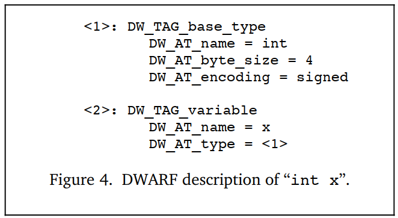
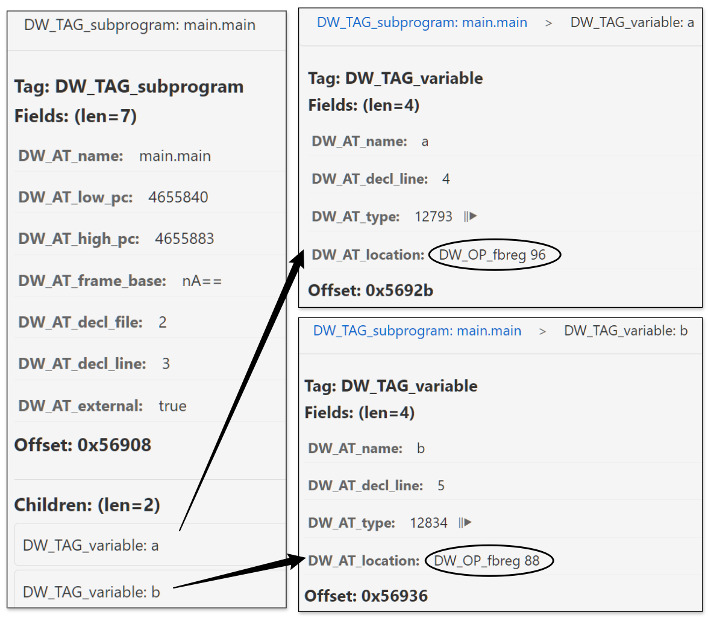

描述数据和类型
软件调试期间，我们经常打印变量值、查看变量类型、修改变量值，如dlv的print、whatis、set操作，这些操作的实现就离不开DWARF对数据和数据类型的描述。
不同的编程语言都定义了内置的数据类型，也提供了自定义数据类型的方法。在不同编程语言中，即使是看上去名字一样的基本数据类型，在相同硬件、OS上可能也是不同的，更不用说不同硬件、OS上的情况下了，如int在C和Go中的不同，Go int在32位、64位下的不同。
如果DWARF要对不同编程语言实现精准的低级表示、描述，应该怎么做？DWARF首先根据机器硬件抽象出几种基本类型（数值类型），在此基础上可以通过基本数据类型的组合来构建其他复合数据类型，这些新数据类型也可以进一步用于构建其他自定义的数据类型。
下面我们来看看如何使用DIE来描述数据和数据类型。
基本类型
每种编程语言都定义了一些基本数据类型，并内置到语言的类型系统中。例如，C、Go和Java 都定义了 int，Java提供了明确的定义，int在任何平台上都是4字节，但 C、Go 只指定了一些一般特征，允许编译器选择最适合目标平台的实际规格，如Go在32位和64位操作系统上分别是4字节和8字节。有些语言更特殊，如 Pascal 甚至允许定义新的基本类型，例如可以容纳 0 到 100 之间的整数值的整数类型。
// see: src/cmd/compile/internal/types2/sizes.go
var gcArchSizes = map[string]*gcSizes{
"386": {4, 4}, // 32-bit
"amd64": {8, 8}, // 64-bit
"amd64p32": {4, 8}, // 32-bit pointers on 64-bit CPU
// ...
}
type gcSizes struct {
WordSize int64 // word size in bytes - must be >= 4 (32bits)
MaxAlign int64 // maximum alignment in bytes - must be >= 1
}
简言之，就是不同编程语言、平台存在这样的事实：
- 相同语言在不同硬件平台上，数据类型相同的情况下，其尺寸可能也不同；
- 不同语言在相同的硬件平台上，数据类型相同的情况下，其尺寸也可能不同。
在 DWARF v1及其他调试信息格式中，编译器和调试器应该就 int 究竟多少字节达成一种一致，类似硬编码的方式。但是当同一硬件可以支持不同大小的整数，或者当不同的编译器对同一目标处理器做出不同的实现决策时，这会变得有些尴尬。这些通常没有记录在调试信息中的假设，将使得不同编译器或调试器之间，甚至同一工具的不同版本之间难以实现兼容性。
如何将这些编程语言中的基本类型也能够灵活地映射为不同软硬件平台上的bytesize？C语言还支持位字段，即使存储分配上分配了N字节，但是实际上有可能仅使用一部分bits，这种又如何描述？ DWARF v2解决了此问题，它提供了一种低级映射方案，可以实现“简单数据类型”和“目标软硬件平台上的实现”之间的灵活映射。
DW_TAG_base_type，对应的attributes包括（可以参考DWARFv2-Appendix: Current Attributes by Tag Value)：
| Attributes | Description |
|---|---|
| DW_AT_name | 类型名称，如 int |
| DW_AT_encoding | 指示应该如何编码、解读该数据，如 address、boolean、float、signed、unsigned、signed char、unsigned char、packed、UTF等 |
| DW_AT_byte_size | 需要占据多少字节 |
| DW_AT_bit_size | 实际使用多少bits |
| DW_AT_bit_offset | 实际使用的bitsize个bits在bytesize个字节中的起始偏移量 |
| DW_AT_sibling | 指向兄弟DIE，DWARF信息生成时，如果认为有必要快速跳过children而扫描Siblings更重要时，会生成该属性 |
属性 DW_AT_encoding 是不同基本数据类型差异的体现，它指示了不同基本数据类型，应该如何编码、如何解读。下面是几个示例，帮助大家加深理解，对应的语言编译工具链生成DWARF信息的时候参考这个生成即可，调试器读取的时候参考这个读取、解读数据即可。
Figure 2a 定义类型 int 在32位处理器上是4字节有符号数, 图 2b 定义类型 int 在16位处理器上是2字节有符号数。

图 3 定义类型word是16位有符号数值，但该类型实际占用4字节，但只有高位2个字节被使用，低位2个字节全部为0。

注意，上图示例取自DWARF v2的官方示例，在DWARF v4中已经废弃了DW_AT_bit_offset，而是用DW_AT_data_bit_offset代替。在DWARF v2、v3中该属性DW_AT_bit_offset用来表示big endian机器上的位字段，对little endian机器无用有点浪费。
复合类型
如Figure 4所示，先来看一个描述有名变量的例子。首先有一个 DW_TAG_variable类型的DIE描述这个变量 x，这个DIE的属性 DW_AT_name=x 表示变量名为x，DW_AT_type=<1> 则表示该属性是一个类型引用，变量类型由 <1>指向的DIE确定。而 <1> 这个DIE表示是一个大小为4字节的有符号整数。最终我们可以得知，这里定义了一个类型为4字节有符号整数的变量x。

接下来我们再继续看，通过组合这些基本数据类型，我们可以构造更复杂的复合数据类型。Figure 5中，定义了一个变量px，其类型通过 DW_AT_type=<2> 引用另一个编号为 <2>的DIE。
编号为 <2> 这个DIE的TAG为 DW_TAG_pointer_type，说明它是一个指针类型，该DIE内部又通过 Attribute DW_AT_type=<3>引用另一个描述数据类型的编号为 <3>的DIE，<3>这个DIE的TAG为 DW_TAG_base_type，表示它是一个基本数据类型，具体为4字节有符号整数。基本数据类型不依赖任何其他类型，分析结束。
这样，一连串分析下来，最终我们可以确定变量px是一个4字节位宽的指针，这个指针指向1个4字节的有符号整数int。

其他数据类型也可以通过链接多个DIE（DW_TAG…+DW_AT_type…）来定义一个新的数据类型，例如可以在DW_TAG_pointer_type基础上扩展来支持描述C++的引用类型，或者在基本类型基础上扩展来支持描述Go uintptr的，进而Unsafe.Pointer。
ps：关于引用属性的取值的一点补充？
这里为了好理解，引用DIE时使用了一个自然编号，真实DWARF数据存储中，这里不是编号，而是一个偏移量（被引用数据类型的DIE的位置距离包含它的编译单元开头的偏移量）。
数组类型
DW_TAG_array_type，结合一些相关attributes共同来描述数组。
数组对应的DIE，该DIE包含了这样的一些属性来描述数组元素：
- DW_AT_ordering：描述数组是按照“行主序”还是按照“列主序”存储，如Fortran是按照列主序存储，C和C++是按照行主序存储。如果未指定该属性值，则使用DW_AT_language指定编程语言的默认数组排列规则；
- DW_AT_type：描述数组中各个元素的类型信息；
- DW_AT_byte_stride/DW_AT_bit_stride：如果数组中每个元素的实际大小和分配的空间大小不同的话，可以通过这两个属性来说明；
数组的索引值范围，DIE中也需要通过指定最小、最大索引值来给出一个有效的索引值区间。这样DWARF就可以既能够描述C风格的数组（用0作为数组起始索引），也能够描述Pascal和Ada的数组（其数组最小索引值、最大索引值是可以变化的）。
数组维度一般是通过换一个TAG为DW_TAG_subrange_type或者DW_TAG_enumeration_type的DIE来描述。
- 其他；
通过上述这些属性以及描述数组维度相关的DIE，来共同明确描述一个数组。
举个例子，我们创建一个数组，然后编译构建 go build -o main -gcflags 'all=-N -l' main.go, 然后使用作者提供的工具dwarfviewer来可视化文件中DIE之间的依赖关系。
$ cat main.go
package main
func main() {
var nums [16]int
_ = nums
}
运行 dwarfviewer -file main -webui，然后搜索main.main并一级一级展开nums相关的DIE定义，作者已经将array相关的重要信息在截图中进行了标注，结合上述文字描述应该不难理解。

Struct, Classe, Union, and Interface
大多数编程语言都允许通过组合多种不同的数据类型来定义一个新的数据类型，DWARF中也需要支持对这种能力的描述，因此DWARF中定义了下面的TAG类型：
- DW_TAG_structure_type，描述结构体struct；
- DW_TAG_class_type，描述类class；
- DW_TAG_union_type，描述联合union；
- DW_TAG_interface_type，描述interface；
struct允许组合多个不同类型的成员。C语言中联合union也允许这样做，但是不同的成员共享相同的存储空间。C++ struct相比C语言又增加了一些特性，允许添加一些成员函数。C++中class和Java中interface、class有相似之处，但也有不同。另外，不同语言一般都有相似的组合数据类型，只是取的名字可能不同，比如C++中叫class和class members（类和类成员），在Pascal中叫Record和Fields（记录和字段）。DWARF抽象这些描述时也要选个合适的名字，DWARF中采用了C++中的术语。描述class的DIE是描述该class members的诸多DIE的父DIE，每个class都有一个名字和可能的属性（成员）。如果class实例的大小在编译时可以确定，描述class的DIE就会多一个属性DW_AT_byte_size。class及class member的描述与基本数据类型描述的方式并没有太大的不同，可能会增加一些其他的描述信息，如class member的访问修饰符。C\C++中也支持结构体位字段，即struct中多个成员可以共享同一个字节，只是不同的成员可以使用位数不同的相邻的比特。需要通过多个属性来描述，DW_AT_byte_size描述结构体实际占用多少个字节，属性DW_AT_bit_offset和DW_AT_bit_size描述位字段实际占用哪些比特，从第几个bit开始存储，一共占用多少个比特。
由于这几种类型所描述程序构造的差异，DWARf要为其定义对应的一些attributes才能精确地描述不同语言中的这些共性、差异性。由于篇幅原因，就不一一列举和对比了。感兴趣的话，您可以参考DWARF v4的 $5.5章节来详细了解。
这里我们来看一个go中进行类型定义的示例，这里定义了一个结构体类型Student，并且通过匿名嵌套定义了一个CollegeStudent，然后main函数中创建二者的变量。
$ cat main.go
package main
type Student struct {
Name string
Age int
Sex int
Grades map[string]float32
}
type CollegeStudent struct {
Student
Clubs []string
}
func main() {
var s1 Student
var s2 CollegeStudent
_ = s1
_ = s2
}
注意编译构建的时候仍然关掉内联和其他优化，我们来可视化看下生成的DIE信息，作者已经在途中通过图例进行了标注，结合前面的介绍，也是很容易理解的：

变量定义
DW_TAG_variable，用来描述变量，前面给出的示例中已经多次进行了提及。变量通常非常简单，变量有变量名（DW_AT_name），程序中使用变量名来代指变量在内存或者寄存器中的值。变量的类型描述了值的类型以及访问修饰（如只读const）。另外需要注意的是，DWARF中将variables分成3类：constants（常量）、formal parameters（函数形参）、variables（变量）。这里我们先只关注variables就可以，后续有的是机会遇到constants、formal parameters，那时候再介绍不迟。
对变量进行区分的两个要素是变量的存储位置和作用域：
- 变量的存储位置：一个变量可以被存储在全局数据区（.data section）、栈、堆或者寄存器中；
- 变量的作用域：描述了它在程序中什么时候是可见的，某种程度上，变量作用域是由其声明时的位置确定的。DWARF中通过三元组（文件名，行号，列号）对变量声明位置进行描述；
在我们进行调试时，我们既然能拿到变量在内存中的位置信息，那我们就可以通过PTRACE_PEEKDATA操作读取到对应的数据，要读取多少数据，以及如何解释这些数据，就需要再参考这里变量引用的类型信息。有了数据，有了类型，有反射变成经验的同学，自然就会觉得轻车熟路了，还有啥玩不转的？对吧。
前面给出的demo截图中，眼睛敏锐的读者应该发现问题了，变量地址值显示的更像是乱码？没错，DW_AT_location属性的值是一个byte数组，在dwarfviewer server端回包时会将其先进行base64编码，返回给前端后就直接展示出来了，所以地址值显示为了一个诡异的字符串。那么直接显示这个byte数组可以吗？不行的。这就是接下来要介绍的内容，该byte数组中存储的并不是一个地址值，而是一个位置表达式，是一串地址的计算规则。我们要执行这里的计算规则，才能得到有效地址。我们对dwarfviewer逻辑进行了调整，使得它可以将上述byte数组，转换成可读的位置表达式。
变量位置demo：下面示例及截图中正常展示了变量的位置信息，在我们的例子中，变量的位置表达式是基于fbreg的寻址规则，这里先不展开，介绍完位置表达式内容之后大家自然会明白。
package main
func main() {
var a string = "helloworld"
var b int = 100
_ = a
_ = b
}

变量作用域demo：我们还需要展示一个情况，就是在不同作用域中定义变量的问题，微调下示例代码，再执行下测试。
package main
func main() {
var a string = "helloworld"
var b int = 100
_ = a
_ = b
{
var a string = "helloworld2"
_ = a
}
}
然后我们再来可视化生成的DIE信息，看下有什么不同，我们注意到作用域的表示是通过 DW_TAG_lexical_block 来实现的：

了解更多
- Debugging Using DWARF (2012), https://www.scribd.com/document/403070136/Debugging-Using-DWARF-2012
- Types of Declarations, 请参考 DWARF v2 章节3.2.2.1 和 章节3.2.2.2；
- Accessibility of Declarations, 有些语言提供了对对象或者其他实体的访问控制，可以通过指定属性 DW_AT_accessibility 来实现, 可取值 DW_ACCESS_public, DW_ACCESS_private, DW_ACCESS_protected；
- Visualbility of Declarations, 指定声明的可见性，声明是否在其它模块中可见，还是只在当前声明模块中可见，可以通过指定属性 attribute DW_AT_visualbility 来实现, 可取值 DW_VIS_local, DW_VIS_exported, DW_VIS_qualified；
- Virtuality of Declarations, C++提供了虚函数、纯虚函数支持，可以通过指定属性 DW_AT_virtuality 来实现, 可取值 DW_VIRTUALITY_none, DW_VIRTUALITY_virtual, DW_VIRTUALITY_pure_virtual；
- Artificial Entries, 编译器可能希望为那些不是在程序源码中声明的对象或类型添加调试信息条目，举个例子，C++中类成员函数（非静态成员），每个形式参数都有一个形参描述条目，此外还需要多加一个描述隐式传递的this指针；
- Declaration coordinates, 每个描述对象、模块、函数或者类型的DIE（调试信息条目）都会有下面几个属性 DW_AT_decl_file、DW_AT_decl_line、DW_AT_decl_column，这几个属性描述了声明在源文件中出现的位置；
本节小结
本文介绍了DWARF中如何描述数据和数据类型。主要内容包括:
- DWARF通过基本类型的组合来构建复杂的数据类型,以适应不同编程语言和平台的需求；
- 使用DW_TAG_base_type及其属性来描述基本数据类型,包括类型名称、编码方式、大小等信息；
- 使用DW_AT_type属性来引用使用到的类型DIE；
- 使用DW_AT_byte_size, DW_AT_bit_size, DW_AT_bit_offset来表示分配的字节数、实际使用的bits数以及偏移量；
- 变量的作用域通过DW_TAG_lexical_block来表示,可以准确描述不同作用域中的同名变量；
- 通过DW_AT_location属性来描述变量的位置信息,它存储了一个位置表达式而不是直接的地址值；
这种灵活的类型描述机制使得DWARF能够精确地表达各种编程语言中的数据类型，并支持调试器正确地访问和显示变量信息。同时通过位置表达式和作用域的描述,也能准确地定位和区分变量。下一节我们将详细介绍下DW_AT_location位置信息是如何设计的。
参考文献
- DWARF, https://en.wikipedia.org/wiki/DWARF
- DWARFv1, https://dwarfstd.org/doc/dwarf_1_1_0.pdf
- DWARFv2, https://dwarfstd.org/doc/dwarf-2.0.0.pdf
- DWARFv3, https://dwarfstd.org/doc/Dwarf3.pdf
- DWARFv4, https://dwarfstd.org/doc/DWARF4.pdf
- DWARFv5, https://dwarfstd.org/doc/DWARF5.pdf
- DWARFv6 draft, https://dwarfstd.org/languages-v6.html
- Introduction to the DWARF Debugging Format, https://dwarfstd.org/doc/Debugging-using-DWARF-2012.pdf
- dwarfviewer, https://github.com/hitzhangjie/dwarfviewer